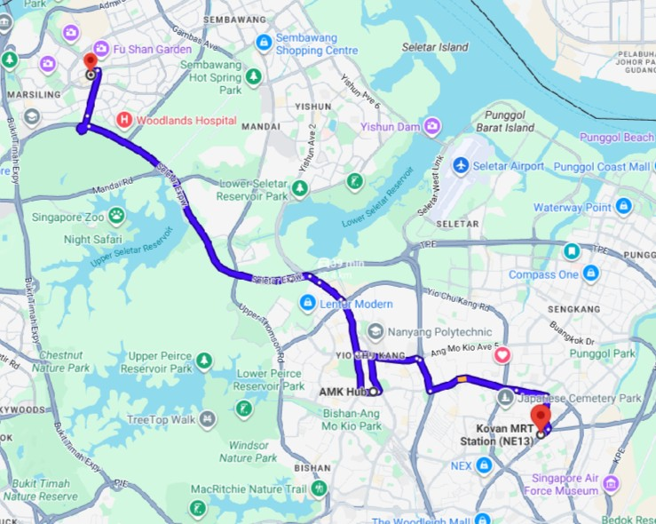
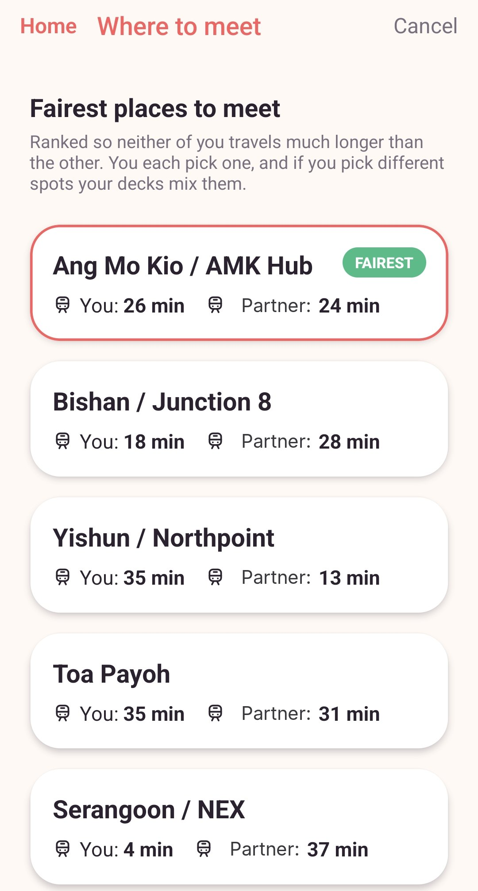
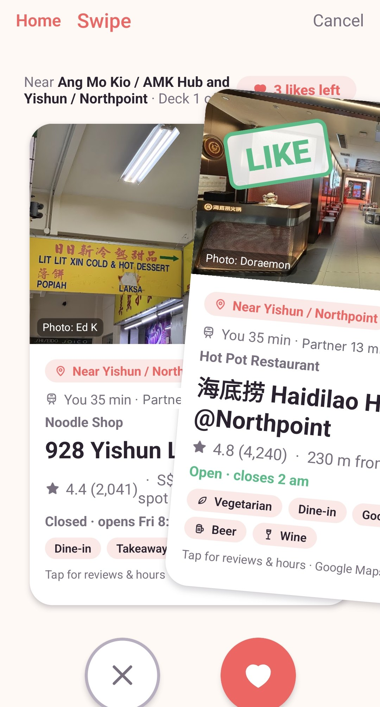
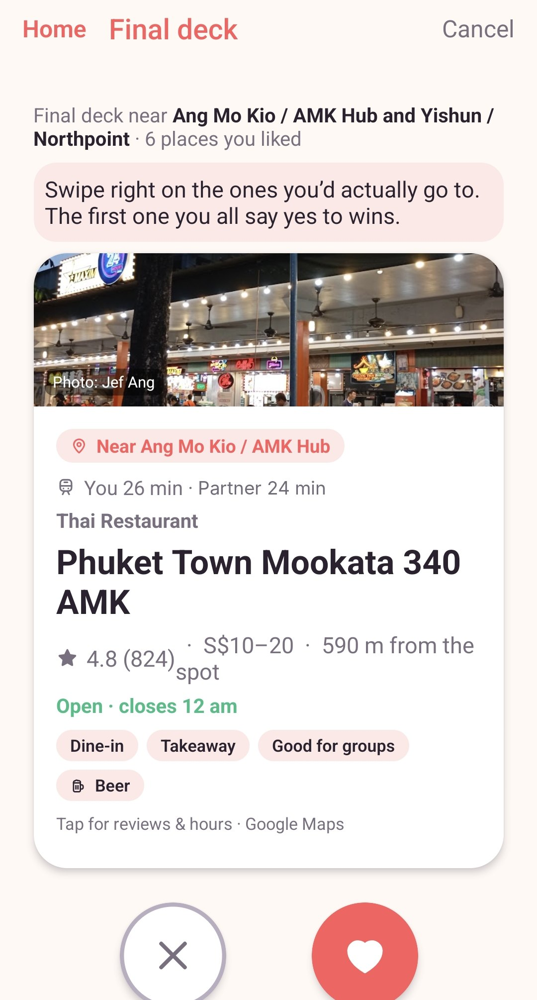
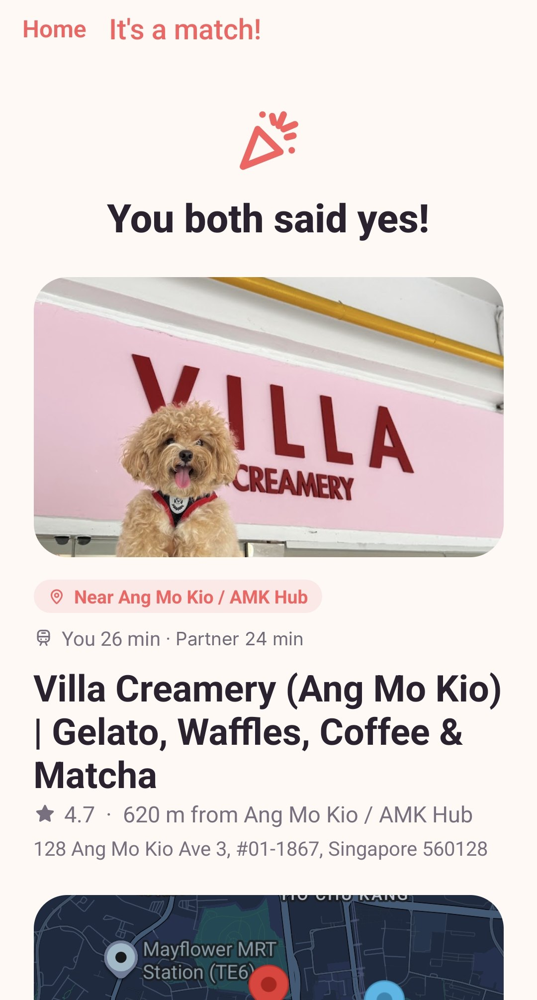
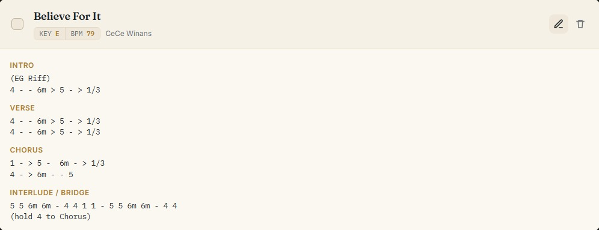
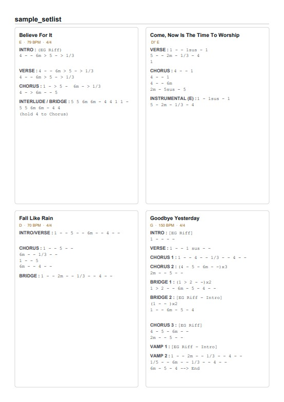
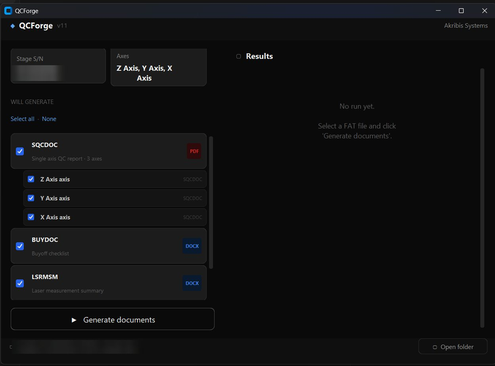
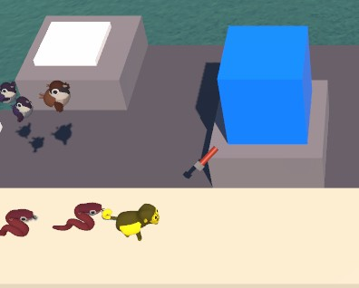

Software developer in Singapore. I build apps for problems I actually have, with a lot of help from AI, and I test everything on real people before I call it done.
Each project below goes through the same four parts.
Idea the real problem
Visualise sketches and rules
Build who wrote what
Realise shipped and used
A1Personal, Oct 2026 to now
Halfway
An app that picks a fair place for two people to meet in Singapore, then helps them agree on where to go.
React Native, Supabase, Google Maps APIs. Code written with Claude Code.
Idea
My partner and I live on opposite sides of Singapore. Every date started with “so where do we meet?” and went downhill from there.
The obvious answer is somewhere in the middle of the map. That doesn't work here. A spot that looks halfway can be 15 minutes on the MRT for me and 45 minutes of buses for my partner. I wanted an app that measures fairness in travel time, then makes picking a place to eat less of a debate.
I wrote the brief for just the two of us: a shared list of places we want to try, a meeting point that's fair by public transport, and a quick way to both say yes or no to nearby places. I kept the data model open for a group of friends later, but built the screens for two.

Before the app: me at Kovan, my partner at Woodlands, on Google Maps. AMK Hub looks like the middle, but the map can't tell you if the trip is fair for both of us.
Visualise
Most of the design work happened before any screens. I spent it on the rules, because those decide whether the app feels fair.
The main one: rank meeting spots by the longer of the two trips, not the total. With me at Kovan and my partner at Woodlands, ranking by total would send us to NEX: 4 minutes for me, 37 for my partner. Ranking by the longer trip picks AMK Hub, 26 and 24. The table on the right shows the difference.
Swiping got a rule too. Each of us gets three likes per round, and likes stay hidden until the last deck, so nobody just copies the other person's picks.
How a meeting spot gets picked
Spot
Me
Partner
Longest trip
Real times from the app, Kovan to Woodlands, by public transport.
halfway-brief.md19 Oct, first thing I wrote
## What we're building
A mobile app that helps two people in Singapore decide where to meet, where to eat, and what to do. We live far apart and usually meet after work. Our problem is indecision and unfair meetup spots.
We keep a shared list of places we want to try.
Each of us gives a starting location.
The app picks a fair meetup hub by public transport time, not map distance.
It builds a shortlist near that hub, our favourites first.
We each swipe yes/no on our own phones. The first place we both say yes to is the match.
## Design for groups, build for two
No sketch. The idea went straight into this brief for Claude Code.
How a date gets decidedthe rules, drawn out
Both share a start pointGPS or an MRT station. Only the other person sees it.
Five fairest spotsRanked by the longer of the two trips.
Each picks a spotPick different ones and the decks mix both.
Swipe the decksThree likes each. Nobody sees the other's likes yet.
Final deckOnly places someone liked. Places you both liked are flagged.
First shared yes winsMatch screen, then directions.
No match? Next deck, up to three. Then back to the spot picker. After five spots, a give-up screen.
Build
It took about two weeks to go from a brief to something we actually used.
Set up Supabase, Google Cloud and email sign-in. Google Maps showed a black screen in Expo Go, so I switched to a proper development build.
First version on my phone. Reworked the swipe rounds after the first try.
Made a web version for my partner's iPhone. Our first test on two phones got stuck when we both voted at once, so I moved the match logic to the server.
Replacing the emoji with icons I designed. Ratings and Google Maps import are next.
Who did what. Claude Code wrote the code from my specs. I came up with the idea and every rule, designed the data model, ran Supabase, Google Cloud and the app builds, and tested every flow on real phones. When something felt wrong, I read the code, worked out why, and asked for the fix.
Under the hood: every table is locked down with row-level security, the Google API key never leaves the server, and the match is decided in the database so the two phones can't disagree. There are 53 automated tests.
Realise
We use it for our dates now, me on Android and my partner on an iPhone. It still can't stop us arguing about dessert.

Kovan and Woodlands: AMK Hub comes out fairest.

Three likes each per deck, kept secret until the end.

The final deck only has places one of us liked.

Our match: a dessert place. Naturally.A whole date, start to match, in 27 seconds.
A2Personal, live
Chord Center
Where our church worship team writes, keeps and prints chord charts.
HTML, CSS, JavaScript, Supabase. Built with AI help.
Idea
We write chords in the Nashville Number System, which uses numbers instead of letters, so one chart works in any key. I wanted one place to write charts, keep them, and print the whole set list for Sunday in one go.
Visualise
Each person gets their own song library. A set list prints as one PDF, with three layouts because the guitarists and the singers want different things on the page. Old charts that came as one long PDF get split into separate songs on import.
Same chart, any key
Verse: 1 – 5 – 6m – 4
The band reads the numbers. Pick the singer's key and the chords follow.
Build
Plain HTML, CSS and JavaScript, so it runs for free on GitHub Pages. Supabase handles sign-in and storage, and each person only sees their own songs. jsPDF makes the set lists and PDF.js reads the old files. I decided what it should do and tested it on the team's real charts.

A song in the editor: key, tempo and every section in Nashville numbers.
Realise
It's live, and it's what I use to get chord sheets ready for the team.
Picking four songs, naming the set and exporting the PDF.

An exported set list: four songs on one page, ready to print.
B1At work, Akribis Systems, 2025 to now
QCForge
A tool that writes the QC reports for every motion stage we ship, so nobody types them up by hand anymore.
Python, built with AI help. Eleven versions so far.
Idea
I test precision motion stages for a living. Every stage ships with a QC report in the customer's own template, and filling those in meant copying numbers from our master sheet by hand. About three hours per stage, and every copy was a chance for a typo. I was the one doing it, so I knew exactly where the time went.
Visualise
I started with the spreadsheet, not the code. If the input is messy, the tool can only guess. So testers now fill in one workbook per stage that checks itself: colours show what to fill in, a dot marks every cell the tool reads, and a ready check goes green when nothing is missing.
How to useProject InfoX Axis_SQCNEW AXIS (copy me)LSRMSMFRF SS
Repeat or Prototype
Repeat
Project ID
PRJ-0000
Customer
System Name
Demo XY stage
Stage S/N
Tested By
J. De Guzman
Axis 1
X Axis
Axis 2
Y Axis
READY CHECK
Missing
What to do
Project info
2
Fill the red cells
X Axis
0
OK
Y Axis
3
Fill the red cells
OVERALL
5
✖ 5 field(s) still empty
Description
UOM
Measured
Remarks
●
Motor Model
LM-demo
Phase Inductance, L
[mH]
2.10, 2.12, 2.11
joined from 3 rows
●
L m1-m2
[mH]
2.10
●
L m2-m3
[mH]
2.12
●
L m3-m1
[mH]
2.11
●
Scale Pitch
um
20
Interpolation
X
400
●
Resolution
um
0.05
●
Encoder Output Type
picks which report lines fill
Fill inCalculatedNot in reportsMissing, and QCForge needs it● QCForge reads this cell
Recreated from the real template with dummy values. No customer data is shown.
FAT workbook+Laser measurement PDF→QCForge→Every customer QC document, filled in+Flags where results don't match
No code or customer data is shown, since this is an internal tool.
Build
It started as a script I ran from the terminal. Eleven versions later it has a proper window, and other testers use it without asking me how.
One run fills in everything a stage needs: a QC report PDF for each axis, the buy-off checklist, the laser summary, and an extra XY report for the customers who want one. It reads the laser results straight from the measurement PDF, so nobody retypes them, and it warns you when a number doesn't match the factory test. A stage can have up to 10 axes. Adding one means copying a sheet, with no change to the code.

Load a workbook and it lists what it's about to make. Untick anything you don't need.
Rework
Every version came from something that annoyed me while using the last one on a real stage. Here's the same part of the sheet in the first version and now, and what changed in between.
First version
Description
UOM
Measured
Remarks
Motor Model
LM-demo
Phase Inductance, L
[mH]
2.10, 2.12, 2.11
m1-m2 , m2-m3 , m3-m1
Phase Res, R
[Ohm]
4.20,-4.21, 4.20
m1-m2 , m2-m3 , m3-m1
Encoder Brand
Demo
Colours mark sections. Three readings share one cell, and a stray minus sign slips in unnoticed.
v11
Description
UOM
Measured
●
Motor Model
LM-demo
Phase Res, R
[Ohm]
4.20, 4.21, 4.20
●
R m1-m2
[Ohm]
4.20
●
R m2-m3
[Ohm]
4.21
●
R m3-m1
[Ohm]
4.20
Colours mark what to do. One reading per cell, joined for the report automatically.
What bugged me
What I changed
Mistakes only showed up as warnings in the terminal, after the script had already run.
A ready check inside the workbook turns green before you run anything.
Three readings went into one cell, separated by commas, so one stray character broke the value.
One reading per row. The workbook joins them for the report.
Adding an axis meant copying sheets and fixing formulas that pointed at fixed cells.
Copy one tab and type its name in the axis list. Up to 10 axes, and the laser and summary blocks appear by themselves.
Cells were coloured by section, so it wasn't clear which ones to fill.
Colours mean fill in, calculated, not in reports or missing. A ● marks every cell the tool reads.
Laser results were typed in by hand.
QCForge reads the laser measurement PDF directly and treats it as the source of truth.
Run from a terminal with a typed command.
An app window: pick the workbook and laser PDF, then press Generate.
Realise
We use it on most standard stages now, around three to five big ones a week. Report time went from about three hours to about half an hour.
Before~3 h
QCForge~30 min
Report preparation time per stage.
A run with a demo workbook. The yellow boxes are warnings telling you what to fix before re-running.
B2At work, a prototype
Docs assistant
A chat assistant that answered servo commissioning questions from the vendor's own documentation.
Setting up a servo drive means searching a huge vendor knowledge base in the middle of a job. I built a retrieval-augmented generation (RAG) pipeline in Node.js that finds the most relevant documentation pages and has an LLM answer from those pages only, using the Groq API for fast replies.
Engineer's question→Find the relevant doc pages→LLM answers from those pages
A3 · B3Games and school
More projects
My degree specialised in game and mobile development.
A3Godot 4 · Android · 2026 · AI-assisted
Packet Defense
Idea
A tower defense game that teaches how cyber threats work.
Build
Seven enemies based on real threats, from a virus up to a rootkit, and six towers with upgrade tiers. Waves scale up and progress saves.
Realise
Exported as an Android APK.
Placing towers, reading the threat briefing, then holding off the first waves.
B3Unity · C# · University group project · 2024
Attack on Towers
My part
The towers and their AI: targeting, firing and projectiles for arrow, explosive and gatling towers.
Build
Also built the tower-building UI.

A turret mid-shot.
B3React Native · Firebase · Final year project · 2024
TripAid
Idea
A travel app with separate flows for travellers, local guides, business owners and admins.
My part
Sign-in and sign-up, password reset, screen navigation, maps and location, and form validation.
The landing page, with the login and sign-up I built.
How I work
I build things for problems I actually have, or that people around me have. These days AI writes a lot of my code, and I'm upfront about that. What I bring is deciding what's worth building, working out the rules that make it feel right, and testing it on real people until it stops being annoying.
My day job helps more than you'd think. Testing precision machines all day teaches you to distrust anything you haven't checked yourself, and that's exactly how I treat code an AI wrote for me. Before tech I made coffee and served at hotel banquets, which taught me that people won't wait for you to explain your app.
Thanks to my partner for testing every build of Halfway, and to the worship team for putting up with Chord Center's early bugs.
℗ 2026 Jazrael De Guzman · Recorded in Singapore · Made with Claude Code